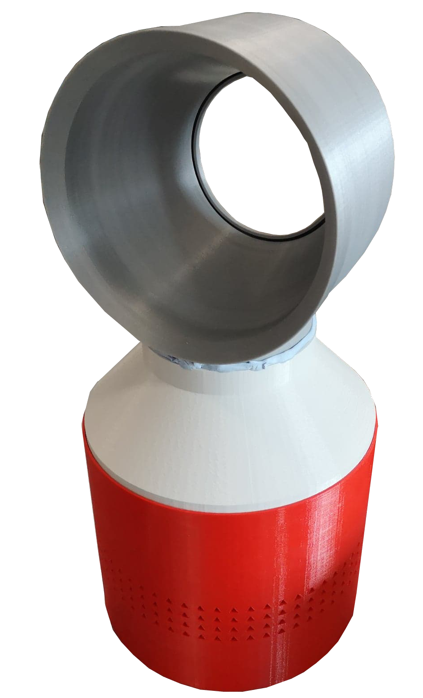

Bladeless Fan Club
Aims and Requirements
The aims of this project are to educate the reader on the engineering principles behind the operation of bladeless fans and provide the reader with the resources to create their own bladeless fan. The prerequisites for obtaining a fully functioning bladeless fan are:
- Access to MATLAB.
- Access to Autodesk Inventor or other CAD software.
- Access to a 3D printer, preferably with dual injection to print the fan in one part.
- Funds (~£30) to purchase an impeller (~£20) and power supply (~£10).

The Components
- Fan Profile The fan profile is the ring-shaped air multiplier. It is the most geometrically complex element. A graphical user interface (GUI) has been developed in Matlab to allow the user to design their own profile based on a number of parameters. The Matlab code then generates the fan profile in xls files which must be imported into CAD software to convert to a file that can be 3D printed. A video tutorial for the process is available. The GUI is shown below and the Matlab files required are available to download.
- Fan Adapter The Matlab code generates an adapter automatically based on the parameters chosen.
- Impeller Housing The impeller housing is a fixed design that is ready to be 3D printed and is available to download.
- Impeller The impeller is the internal fan and needs to be purchased. Most 200 mm computer fans will work, however the Noctua NFF12 iPPC 3000 PWM is recommended for its impressive air flow.
- Power Supply Since computer fans are usually powered via a 3 or 4 pin cable that plugs into a computer power supply, an alterante power solution is required. Any 12 V power supply can be used.